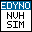
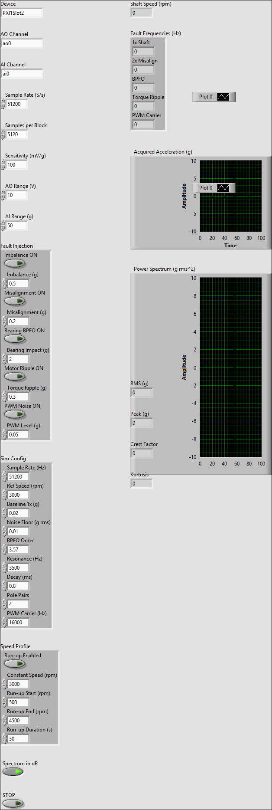
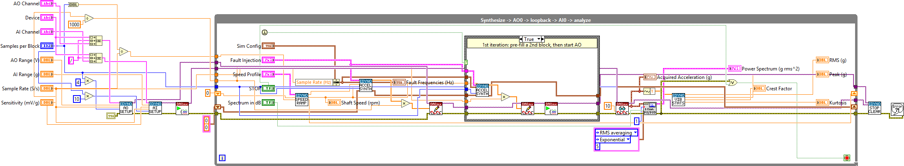
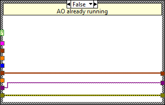

eDyno NVH bench self-validation (SW + HW) on a PXIe-4468.
AO0 generates a continuous, non-regenerated voltage that emulates a PCB 356A15 ICP accelerometer (one axis, 100 mV/g) on an e-bike drive unit. AI0 acquires it back through a BNC loopback (AO0 -> AI0) as an acceleration channel with IEPE excitation OFF (never drive an AO into an IEPE-powered input).
Speed: constant, or a linear run-up when Run-up Enabled is ON (all orders track speed). Faults can be switched on live from the Fault Injection cluster:
1) Imbalance (1x, grows with rpm^2) / Misalignment (2x)
2) Bearing outer-race defect (BPFO impacts ringing the housing resonance -> crest factor and kurtosis rise, sidebands around the resonance)
3) Motor torque ripple (6 x pole pairs order) and inverter PWM carrier with +/-2fe sidebands.
The Fault Frequencies indicator shows where each fault should appear in the spectrum at the current speed. Wiring: BNC from AO0 to AI0 on the 4468.
Latency: AO is kept about two blocks ahead of AI, so a front-panel change shows up in the acquired data after roughly 2 x (Samples per Block / Sample Rate).



